You can print a tax receipt when you enter a transaction by setting the Print option. You can also print a Tax Receipt for any existing receipt(s).
The Print Receipts dialog box will open.
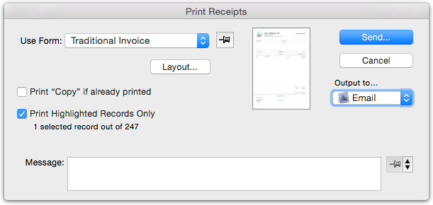
ignored.
Note: If this is the first time that you have printed this form, you should check the positioning and paper size — see Output Settings.
When emailing, the Mail Attachment window will be displayed. See
Emailing Forms for information on this.
For “Plain” forms, if the Print this Logo and/or Print Address & Phone Nos options in the Company Setup window have been checked, the company logo and/or address details will be printed at the top of the receipt. If you want to print the receipt on letterhead which contains these details, you should ensure that the options are off and that the top margin in the page setup is large enough that your letterhead is not overprinted.
For further information on printing, see Printing Invoices, Receipts and other Transaction Forms.
If you have more than one bank account, you may need to transfer funds from one to the other. You can accomplish this by a single payment transaction, which will credit the source bank and debit the destination bank3. However it is easier to use the Transfer Funds command
The Funds Transfer window will be displayed.
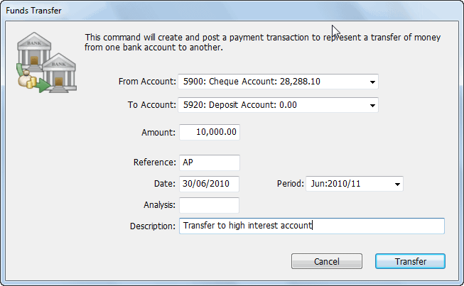
Set the From and To bank accounts, and specify the amount, date, period
and description
Click Transfer
A payment transaction will be created (and posted) from the source bank account to the destination.
Note that, if the currencies differ, you will be able to specify the exchange rate see [Transferring funds to/from a foreign bank account].
The Banking command is used to transfer funds from a bank holding account to a “real” bank account.
For example, in the normal daily running of your business you might receive funds throughout the entire working day. If you receipt these into a “real” MoneyWorks bank account, you will need to reconcile each receipt (even
though in practice there might be only one deposit transaction on your bank statement). However if you receipt the transactions into a bank holding account, they can be transferred to the actual bank account by using the Banking command. Thus the amount of the deposit will appear as a single deposit transaction (Banking Journal) on your bank reconciliation.
To transfer money from a bank holding account into an actual bank account:
The Banking window will be displayed.
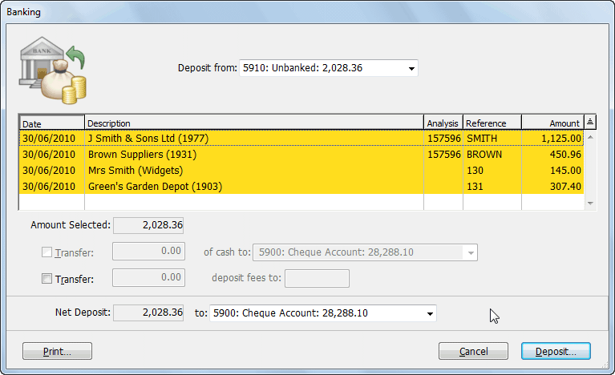
This lists (and highlights) all transactions in the holding account.
The status of the highlight is toggled by clicking on a transaction in the list. Only highlighted transactions will be banked.
There are two transfer options that you can use:
Transfer .. of cash to: This allows transfer of the specified amount of cash to a different “bank” account. For example you might be holding some money back for your petty cash or till float. The amount that you can transfer cannot exceed the total amount of cash receipted (i.e. receipts whose payment method was Cash).
Transfer .. deposit fees to: This allows transfer of a specified amount of deposit fees to the nominated account.
If you wish to record deposit fees as part of the transaction, set the Transfer .. deposit fees to option and specify the amount of deposit fees and the general ledger account code
Do this only if your bank subtracts the bank fees from the deposit amount. If in doubt, or if your bank shows deposit fees as a separate item on the bank statement it is better to enter a separate payment transaction to record the payment of the fee.
Deposit to pop-up menu
The deposit slip will itemise all non-cash transactions, and accumulate cash ones into a single amount. It will include the bank/branch and account name from the transaction or customer/debtor record — see Names.
The Banking Journal window will be displayed.
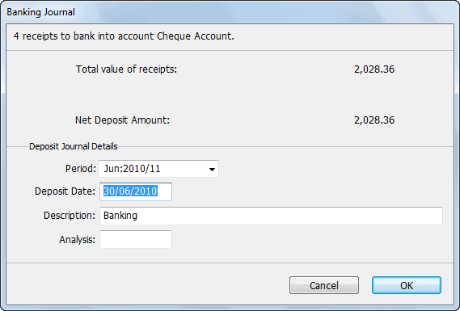
The Banking Journal window summarises the banking transactions and allows you to specify the date and period of the journal.
Change the Date, Period, Description and Analysis fields if required
A banking journal4 will be created to effect the transfer of funds from the holding account to the nominated bank account(s). If Cancel is clicked, the Banking window will be displayed again.
After you have created the banking journal, you can view the individual transactions that made up the journal.
The journal can be found under the Journals tab.
The Find Related window will be displayed.
Set the Banked Receipts and Make Found Set options, and click Go
The transactions that make up the banking will be displayed.
MoneyWorks can create text files of payments for batch loading into on-line banking software. You would normally do this using the Batch Creditor Payments command see Paying a number of creditors. However you can create manual batches, as described below.
Note: You need to have the appropriate software installed to do electronic transfers—call your bank for details.
To create a payments file for transferring via an on-line banking service:
You can use the Find command to locate the records see Lists.
The Electronic Payments dialog box will be displayed— see Electronic Payments for detail of how this operates.
Most banks provide a facility for their customers to download bank statements as QIF or OFX files.
MoneyWorks allows you to import these bank statements5, and can automatically code them as they are imported. It provides an easy way to preview the transactions, allowing you to modify the coding, or apply payments to outstanding invoices. You can also elect to omit transactions, or have them
marked as being ready for reconciliation.
In Australia and New Zealand, you can also use Bank Feeds to fetch bank transactions automatically.
Note: Bank statements should be downloaded from your bank as QIF or OFX files. If your bank does not support these formats, they probably support simple text files such as CSV or tab delimited. These can also be imported into MoneyWorks using the standard Import Transactions command — see Importing into Other Files. However you may have to remove extraneous information (such as account number and opening balances) from the downloaded file.
To import a previously downloaded bank statement
The Statement Coding window will open.
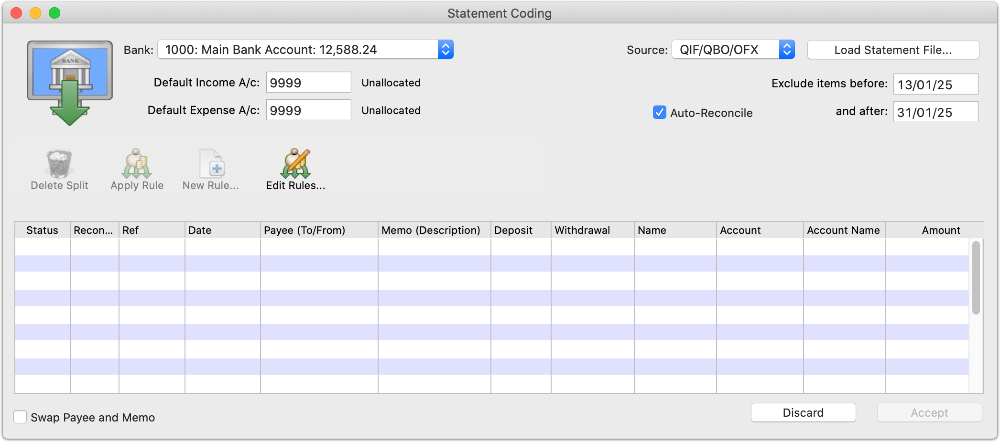
This allows you to specify the bank account that you are importing, as well as other details pertinent to the import.
Bank: The MoneyWorks bank account into which you want to import the bank statement transactions
Default Income A/c The account code to use for any deposits that cannot be coded using one of the auto-allocation rules. It is good practice to use a special account for this, such as a suspense account or an “Unallocated” account. This makes finding unallocated transactions much easier.
Default Expense A/c The account code to use for any withdrawals that cannot be coded using one of the auto-allocation rules. Again it is good practice to use an “Unallocated” account code (this can be the same as that for deposits)
Source The kind of statement file to import. QIF/QBO/OFX to import Quicken interchange file or old-style Quickbooks OFX files provided by most banks. OFX-XML to import modern OFX files (in actual fact if you choose the wrong one here, MoneyWorks will work out the file type for you). Generic CSV will import a csv or tab delimited file, while Bank Feeds will fetch statements using Yodlee (after setting up a feed subscription and linking accounts). 6
Exclude items before: Any transactions in the file being imported that are dated before this date will be excluded from the import. This defaults to the date of the last transaction in the prior statement import for this bank.
And after: Any transactions in the file being imported that are dated after this date will be excluded from the import
Auto-Reconcile: If set, each transaction will be compared against existing transactions, and if found to already exist in MoneyWorks will be marked to be omitted. New transactions will be marked as being reconciled.
Swap Payee and Memo: Setting this swaps the Payee and Memo fields around, as some banks get it around the wrong way.
The transaction information you have downloaded from the bank refers to one bank account. You need to indicate which one it is.
If necessary, set the Default Income and Default Expense accounts
These will be remembered from your last bank statement import, but will need to be set the first time you import a bank statement.
Transactions on the bank statement that are outside of the date range will be ignored. This allows you to download your bank statements and not worry about overlapping dates. When the import is accepted, the before date gets transferred to the after date, ready for the next import.
Transactions on the bank statement that can be identified as being already in MoneyWorks will be marked to be omitted, with the existing transaction marked as reconciled; other transactions will be marked as reconciled.
To import the file, click the Load Statement File button
The standard File Open dialog window will be displayed. Use this to navigate to and open your downloaded bank statement file.
Any transactions inside the nominated date range are imported and listed. Transactions are allocated to the specified default accounts, unless an applicable auto-allocation rule was found, in which case the allocation is made on the basis of the rule. This is shown in the Status column.
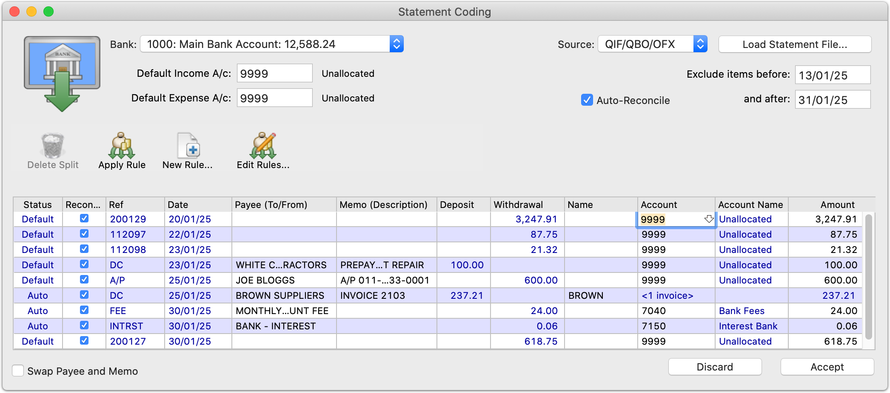
The transactions will be created with the specified allocations.
Importing CSV files
OFX and QIF files have a defined structure and layout, which allows MoneyWorks to dissect them. CSV (comma delimited files) on the other hand has no set layout, but is just a set of field data separated by commas.
MoneyWorks has no idea what each column actually represents.
The Generic CSV bank import option allows you to specify what data is in what column, and to save those settings for later reuse.
When you select Generic CSV, you will be prompted to locate the downloaded csv file in the normal manner, and then will be presented with the following CSV Settings window.
This is used to specify the columns in the csv file that is to be imported.
1. Use the right and left arrow keys to step through the records in the csv file until you find the heading row or first data row
There can be a lot of cruft in bank csv files, and you need to step through this until you get to the transaction data.
If there is a heading row, set the Has Heading Row checkbox
Set the field pop-up menus (Date, Reference etc) to the column number that contains the associated data
In our sample file we have found a data record and can hence determine what columns the data is in.
We therefore set the Date to column 1, the Reference to column 4 and so on.
Check the date format on an actual data record
Dates are important in accounting, and have different formats depending on where you are and the whim of the bank.
If you need to amend a saved format, click on it to select it, make the required changes, then click the Save button and save it with the same name (this will silently replace the existing one).
Highlight a format and click the Delete button to remove it.
In this example the date is of the form yyyy/mm/dd, so we would set the date format pop-up to use that form.
Note: Don't worry about the date delimiter (it might be a slash, a dash or a dot), MoneyWorks will use whatever is in the actual data. The important thing is that it knows the order of the day, month and year.
Note: Some statements might have the sign of the transaction reversed (for example some credit card statements). In this case set the Reverse Sign option, otherwise your payments will appear as receipts.
Once you have the fields aligned, and the heading row and date options set correctly, click the Save button. You will be prompted for a name for the saved format.
Important: As we have seen, bank csv files can contain more than just transaction data. The Generic CSV will skip any records which have fewer fields than the highest field number in the import settings. If the Has Heading Row option is on, the first eligible record is also skipped.
Note: Lines in the text file that are missing a date or an amount will be skipped (it appears that there are some really weird bank formats!).
Previously saved formats are displayed in the top, left list. Just click the format to use, then click Import to load the data.
Once imported, the transactions can be edited in the list. Typically this will involve specifying a correct allocation code for those transactions that couldn’t be allocated automatically. You cannot change the amount of a transaction here (it is after all on your bank statement), and nor can you add new transactions.
To change the allocation code: Click in the Account field (or use the tab key), and type in the correct account code. If you delete the account code, or enter an invalid one, the account choices list will be displayed when you attempt to move out of the field, allowing you to select an account code.
To make a split allocation: A split allocation is where the transaction is coded to more than one account code. Simply change the amount to be allocated to the first account code, and press tab. A new line is inserted containing the balance of the transaction. Change the allocation code on this to the desired code.
To split the amount ...
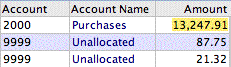
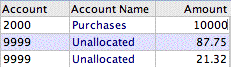
... key in the part allocation amount ...... and press tab to insert a new row
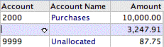
Repeat the process if there is more than one split.
To delete a split allocation: Select a field in the line to be deleted by clicking on it (or tabbing to it), then click the Delete Split toolbar button. The line will be deleted, and the allocation amount added to the previous line. Note that you cannot remove the original line, as this would have the effect of deleting the transaction.
To change the Ref, Date, Payee or Memo fields: For speed of entry, pressing the tab key will only take you through the Account and Amounts fields, as these are the ones that you will normally be changing. You can edit some of the other fields by clicking in them. The fields with blue text (such as deposit and withdrawal) cannot be altered.
To create a new auto-allocation rule: Select the text in the line (in the payee or memo fields) that is the basis for the rule, and click the New Rule toolbar button. A new Auto-allocate Rule window will be displayed — see Setting up an Auto-Allocation for General Transactions. The percentage amounts and allocations in this new rule are based on the information in the current transaction, so if you have already split and allocated, the new rule will by default respect this allocation. If necessary, modify the percentages and codes, and click OK to save the new rule. Note that you need to apply the new rule yourself (see below).
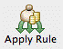
To apply an auto-allocation rule: With the cursor in the line to which you want the rule applied, click the Apply Rule icon, or press Ctrl-U/⌘-U. The rule applied (if any) will be displayed as a coach tip in the bottom right of theTo change an existing auto-allocation rule: Click on the Edit Rules toolbar button to display the list of existing rules, and double click on the rule that you want to modify.
To omit (skip) a transaction: Imported transactions can be omitted by clicking in the Status column. The status will be shown as Skip, and the transaction will be greyed out. Any splits made to the transaction are cleared. Click the status column again to have the (unsplit) transaction included.
In MoneyWorks Gold and Express, if the transaction is for payment against an already entered invoice, you must not allocate it to a general ledger code.
Instead you need to indicate which invoice(s) to mark off as being paid:
If you can’t remember the code, type “@” and press tab to display the Choices list. This will also be displayed if you have entered an invalid code
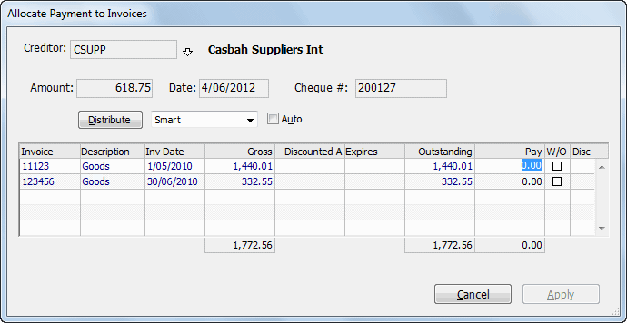
If the transaction is a withdrawal: The Allocate Payment window is shown:Statement Coding window. Transactions that have been auto-allocated have a status of Auto.
Use Apply Rule to use an auto- allocation code
Allocate the payment to the appropriate invoices in the normal manner see
Paying Creditors Individually.
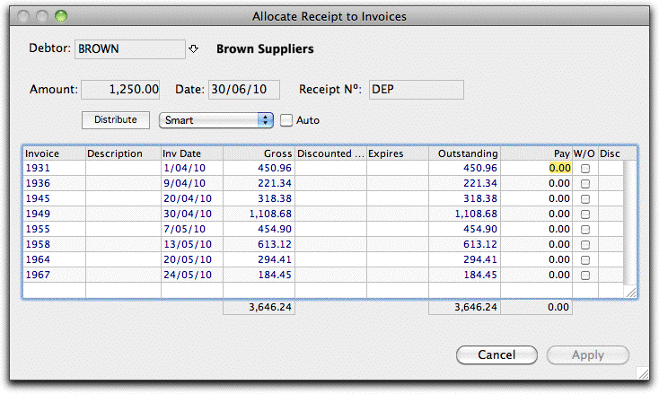
If the transaction is a deposit: The Allocate Receipt window will be displayed: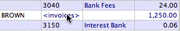
To alter an allocation to invoices:~Click the word <Invoices> in the account field. The Allocation window will open allowing you to alter the allocation.To clear the allocation of invoices: Delete the code previously entered into the Name Code field. The normal allocation code will be shown, and the transaction will no longer be applied against invoices.
The Auto-Reconcile facility is a convenient way to speed up your bank reconciliation, in that it identifies new transactions imported and (because they agree with the bank statement), marks them as being correct for reconciliation purposes. Existing transactions are marked to be omitted, so will not duplicated.
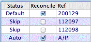
Note: The Auto-Reconcile option must be set before the Load Statement File button is clicked. If you get it wrong, set (or reset) the option, and click the Load Statement File button again.Allocate the receipt to the appropriate invoices in the normal manner — see Receiving Payment for Sales Invoices, allowing for any prompt payment discounts that may have been taken. Any unallocated amount will be treated as an overpayment.
Important: Using Auto-Reconcile is not a replacement for doing your bank reconciliation. You should still complete the bank reconciliation process.
To determine if a transaction on the bank statement already exists, MoneyWorks does the following:
With the Auto- Reconcile option on, new transactions are marked with a tick, indi- cating they are correct for reconciliation purposes. Existing transactions are marked Skip and are greyed out.
The allocation window will close allowing you to continue processing your bank statement. The allocation account will show as “<Invoice>”.
It is important to realise that you have only marked the invoices for payment. There is nothing to stop another user paying the same invoice (or even cancelling it) while you are processing the remainder of the bank statement. If this happens you will be alerted when you attempt to Accept the Bank Statement, and you will need to redo your allocation for the affected transaction(s).
If a single transaction is found in MoneyWorks with the same date, amount and reference (e.g. cheque number), the imported one is marked to be omitted, and the existing one will be marked as reconciled.
If more than one transaction is found with the same reference number, then provided one of them has the same date and the same value, it is marked as being reconciled.
Omitted transactions are marked “Skip”. Clicking on “Skip” will cause the transaction to be included.
Transactions marked for reconciliation are ticked—you can mark a transaction not be reconciled by resetting the tick.
Importing your bank statement makes for easy entry of cash transactions, but:
Unless you have a mechanism for checking your transactions, you are relying on the bank having processed the transactions correctly...and we all know that banks never make mistakes.
If you are entering all your transactions into MoneyWorks, your accounts will be largely up to date. Importing your bank statement means you may have to delete transactions that were previously entered, unless they can be successfully matched. There is considerable scope for having duplicate transactions if you are not careful.
You still need to do your bank reconciliation!
MoneyWorks does not see or store your bank login details—these are all managed by Yodlee. However if a third party gets hold of your MoneyWorks file they will be able to see your bank transactions. For this reason your MoneyWorks file must be password protected for you to use bank feeds.
Cognito Software Ltd has taken every care to protect your bank feed data and neither it nor Yodlee will be responsible for any losses or damages caused directly or indirectly through the use of Bank Feeds.
At present Bank Feeds are only available in Australia and New Zealand. Other jurisdictions will be added later.
Before you can use bank feeds you need to link your MoneyWorks bank account to the corresponding real bank account. To do this:
The Statement Coding window will open
Set the Source pop-up menu to Bank Feeds
If you have not previously used Bank Feeds, the button will change to Set up Bank Feeds.
Bank Feeds
A bank feed is an automated way to obtain statement transactions from your bank's website. Instead of manually downloading your bank statement and then importing it, MoneyWorks can use an aggregation service to fetch the transactions for you with one click.
Some important points about Bank Feeds:
Bank Feeds are provided through MoneyWorks in partnership with Yodlee/ Envestnet, a US company whose business is providing bank information. As such there is an added fee for using Bank Feeds in MoneyWorks;
To access your bank account, you will need to provide the logon details for your bank account. There is an element of risk in doing this, and banks frown about sharing these details (although it could be argued that, because banks don't make the service available themselves, they are actively encouraging such sharing).
Click the Set up Bank Feeds button
If you have not used bank feeds before for this company, you will be asked to subscribe.
The first month is free. After that you will need to attach a credit card to your bank feed subscription.
Follow the steps on screen to make your account.
Once your account is successfully created the Bank feed accounts window will be displayed. This will be empty as this is your first linked account.
Click the Link New Account button
The Yodlee bank account selection will open, listing the main Australian banks
If you are not using an Australian bank, or the bank is not listed, click the
Don't see your instituion? Search here link at the bottom of the page.
A search window will be displayed. Key in the bank name (e.g. ASB, BNZ, Westpac) and select the bank from the list selected (make sure the URL of the bank is for your country).
The Yodlee Log In window will be displayed
Enter your bank login and password
Yodlee will retrieve your security information. This might take some time.
The Link Bank Account window will close and the account will be displayed on the Bank feeds account list.
Click Get Transactions to bring in the newest bank transactions
Note: You may get a warning message from your bank when you sign up. They are alerting you to a possible unauthorised use of your bank account.
Once the bank account is linked, you bring in new transactions by choosing Command>Load Bank Statement, selecting the relevant bank account, and clicking the Fetch Transactions button.
From time to time, additional authentication may be required, in which case a window will pop up to obtain a current password or answer to a security question for the account. When this happens, fill in the required information, click close, and then wait a few minutes for the bank site to be revisited before clicking Get Transactions again.
Notes:
Auto-allocation rules will be applied to downloaded transactions;
Only the latest three months of transactions are available. If you want older transactions you will need to download the corresponding bank statement;
The bank transaction data is updated daily. There is no point in trying to download new transactions using bank feeds more than once a day. If you want verification that a customer has paid you within the last hour, you will need to log into your bank's web site.